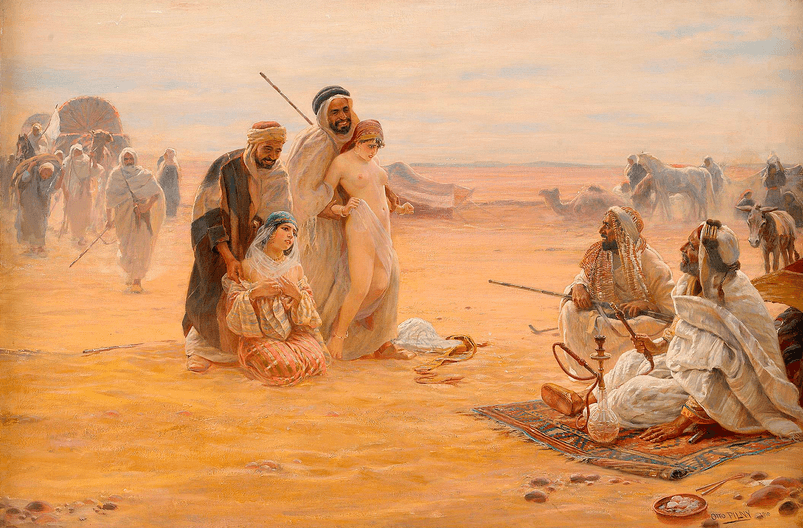

The colorful history of Britain is one that is greatly enriched by the exploits of the various tribes who have made this island their home over the ages. We think, for example, of the Romans, the ancient Celts, the Saxons, the Normans. Arguably, however, all of their achievements pale into insignificance when compared with the Vikings who came by longboat from Scandinavia.
In late 2017, Swedish researcher Annika Larsson of Upssala University announced that she had discovered a thousand year-old Viking textile with ‘Allah’ inscribed on its hem. Media outlets such as The BBC, Guardian, and The New York Times all rushed to speculate that the Viking culture was clearly deeply influenced by Islam. Some in the alternative media were openly critical of the BBC et al., accusing them of ‘abuses of history’, and ‘falling over themselves’ to use a non-story, based on flawed science, to promote their progressive agenda.
The seamless integration of recent immigrants in Sweden only adds evidence to support the BBC’s narrative. The more interesting questions then are these: what were Muslim Vikings like? What motivated them to invade Britain? Using a multitude of accredited historical sources, below is a touch of leftist-approved fiction to portray with a high degree of accuracy how much of modern Britain was first civilized by the Vikings.
Stavanger, 793 AD, Late Spring
The long dark nights of winter are now but a distant memory for the occupants of Stavanger, a bustling coastal town off the West coast of what centuries later would be known as Norway. For sure, there is still a stubborn chill in the fresh morning air, but it is rare to find anyone here who actually feels it; most people – men and women alike – are laboring hard to finish building the finest fleet of ships ever to set sail.
At high tide the next day, the first of these mighty warships (termed longboats) will leave these shores, heading westwards, together with many of the men who built them. None of those leaving behind their loved ones will imagine that they are about to make history. They have no inkling that, in the classrooms of their descendants for generations to come, the achievements of the Vikings will be spoken about in hushed and reverent tones.
On this morning, we find the chief foreman and father of eight, Mohammed Hussein, making a final inspection around the harbor. Along with several hundred fellow Vikings, he will leave for Britain the next day. He personally will have the honor of sailing on the largest of all these vessels – the Holy Jihad – its sky-craping mast taller than any of Stavanger’s many minarets.
Stifling a yawn (the first call to Morning Prayer is especially early at this time of year), Mohammed looks up to see his youngest son, Ahmed, running towards him on the quay. Father and son embrace warmly.
“Are you really leaving us tomorrow, Father?” Ahmed asked plaintively.
“If it is Allah’s will”, Mohammed replied, with a reassuring smile. “By his mercy and grace, we leave at first light. He will surely send us a mighty wind and speed us across the waters.”
Ahmed seemed satisfied by this answer, and it emboldened him to ask another question. It proved to be an error he would regret. All he wanted to do was to please his father and show he was making progress with his studies. Ahmed sensed he wasn’t the best scholar in his class, but he had memorized most of the Koran and much of the Hadiths. Was it reasonable to expect more of a five year old boy?
“Father”, he started, “When Allah guides you safely to the land of the infidel, do you really intend to strike at the neck of all those you find? Will the stones and the trees cry out to you if Jews try to hide behind them?”
In a flash, Mohammed struck the back of his hand across his son’s cheek. Tears welled up in Ahmed’s eyes, not only due to the sudden physical pain he felt, but because he knew he had upset his father. It was never a good idea to make his father angry; his sister had made that mistake once by being seen alone in the company of a male infidel. She had deservedly paid the mortal price.
“Who has spoken to you of such things?” demanded Mohammed, shaking his son with near fury. “Remember this always: Islam is a religion of peace and the Vikings are peaceful Muslims. Why, did you not read in the Koran that to take one innocent life is like killing all of humanity?”
Ahmed was confused. “Yes, father, but Imam Erikson taught me of the principle of abrogation and how the Prophet explained that a later, greater truth can replace an earlier teaching. Imam Erikson said we should be guided by the Prophet’s actions in Medina. Should we therefore spare the infidel?”
Now it was Mohammed’s turn to feel discomfort. He himself was no scholar, having devoted his life instead – like many of his colleagues – to the study and development of mechanical engineering, modern sanitation, new technologies, the seamless fusion of meat and stick, and algebra. He felt sorry for the child before him.
“If that is what the Imam told you, who am I to judge? Only Allah can judge us. Remember this.”
He rubbed his beard in silence for what seemed a long time, thinking. At last, he remembered the point he was trying to summons up from the deep recesses of his skull. He recalled with pleasure the Viking Islamic studies course he had attended years before, when he had met Ahmed’s mother, Hafida.
“Listen, my dear son. We will not kill the infidel. Not this time. We will instead make him pay the Jizrah in return for sparing his life. Remember that the infidel is living in the darkness and we will be giving his all of our algebra, modern technology, and cuisine he will lust after. We will share what we have with him and he will share his money with us. This is being social, no? Let’s call it… socialism.”
Morning Prayer the following day was a far more somber experience than normal. Although his prayers were as devout as always, Mohammed couldn’t help but think of his cherished family he was leaving behind. Who knew when or even if he would return to Norway? Allah knew, of course. Perhaps Imam Eriksen knew as well, for all Mohammed could tell.
He had made a solemn promise to Hafeda that, no, he wouldn’t take any permanent sex slaves. Nor would he rape too many captives, and he would be sure to use protection by praying to Allah first.

His sons delighted them with the ambition inherent in their requests. He embraced all of his sons in turn. He first hugged Leicester, then Birmingham, followed by Luton, Bradford, Blackburn, Rotherham, Southall, and finally Ahmed. To all (except Ahmed – no-one knows for sure why), he promised that his fellow Vikings would populate Britain and establish dwelling places across the land. These places would be named after his sons. In this way, the Vikings’ legacy would be forever remembered.
History does not record whether Mohammed made it safely back to his family in Norway. What we do know, however, is the following: due to the thriving population of Mohammed’s ancestors in the towns and cities bearing his sons’ names, Mohammed and his fellow Vikings reached Britain’s shores by Allah’s grace.
Read Next: 21 Quotes Of The Vikings’ Havamal To Guide A Masculine Lifestyle